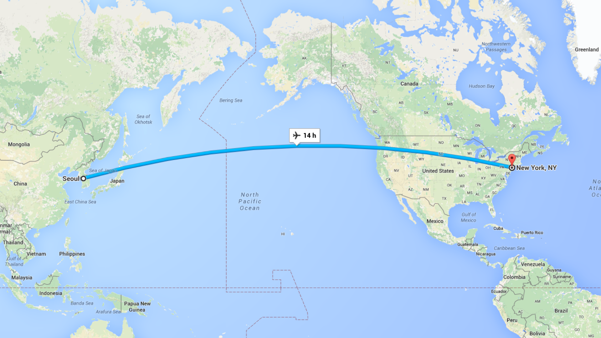
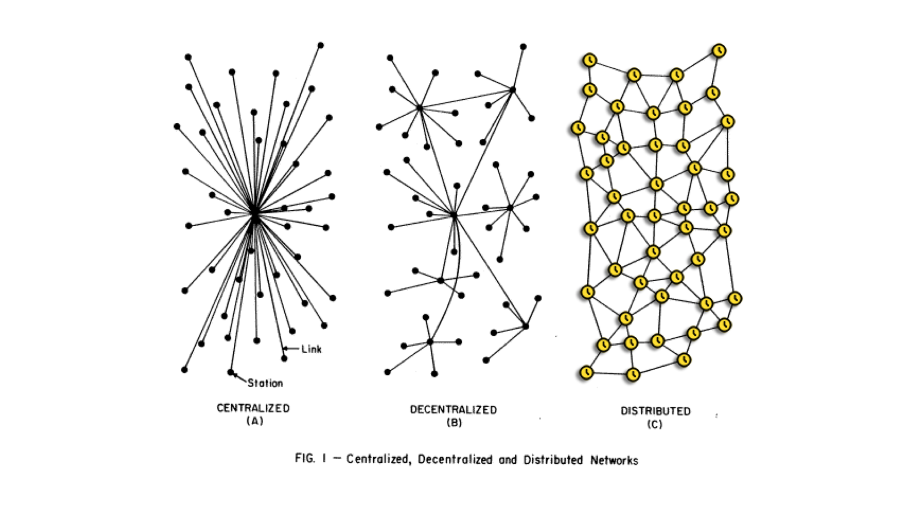
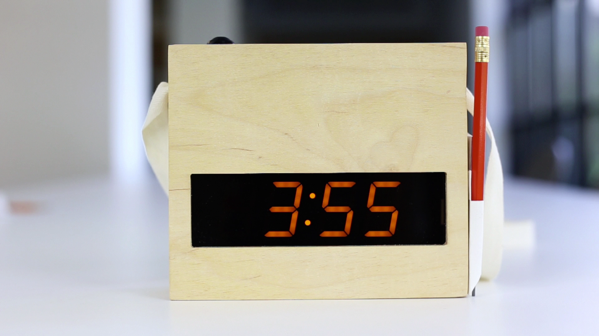

Time as the non-standard measurement
27 Aug 2015, by E Roon KangThis is the script of the talk, presented at the TED Fellows Retreat 2015, on Aug 27, 2015, Monterey, CA.
I was working on a project in Korea last year, for a public art festival, for which my studio in New York was providing designs. And because of the physical distance between Seoul and New York, we were video conferencing almost every day. These calls had to happen at odd times for everyone – either very early in the morning or very late in the night.

One of the main curators of the event, my friend and collaborator Taeyoon Choi, was also based in New York and was working remotely most of the time. One day, we were complaining about how our professional lives were happening in odd hours while our personal lives were bound to New York’s local time, which made our lives much more complicated.
It was, as if, we are living in someplace else — in-between New York and Seoul — not completely belonging to either of those places.
Similarly, in our perceptions, those conference calls were happening not in New York or Seoul’s local time, but possibly ‘elsewhen’ — some time else that the participants from both places share momentarily.
Time is based on a movement of planet earth because we consider that as a constant: the speed which the earth rotates around the sun. It’s practical to think of time in this way because it registers every event into a single and linear metric system. It works like an assembly line, our phone calls and email communications, just about anything is bound to this completely linear framework and we rely on this to define “order.”
What’s interesting about this linear narrative is that it has a very definite beginning and end. Time, on a personal level, is unquestionably a finite resource. You can accumulate infinite amount of wealth but you cannot live an infinite life. I think this is the motivation behind every technological advancement. To maximize our use of time by doing more things with less amount of time.
As a result, the contemporary world operates in terms of global synchronization. Things happen in real time and this semblance of simultaneity is a defining characteristic of value and a synonym of efficiency.
But as a human being, it’s not uncommon to feel detached from the real time like when you’re jet-lagged and can’t fall asleep or missing your subway stops while daydreaming. These occur when you’re by yourself, not syncing perfectly with the GMT, the Greenwich Mean Time.
While Taeyoon and I were having conversations like this, we realized that there’s no tool available for us to acknowledge these personal perceptions of different times. These senses are essentially ephemeral, as soon as you look at your watch boom you’re back in sync with the GMT.
We wanted to give form to these personal senses of time by conceiving a new measurement system that captures these personal yet ephemeral senses. Then perhaps, we could create a time device that shows your personal time so that you can interact with it without syncing back with the GMT.

Perhaps, we could network these devices and think about how to negotiate these personal times from person to person. We could create an alternative time-system, a consensus time, the bottom up approach towards deciding what time it is now as opposed to the top-down approach where we’re basically being told by geo-political standards.
In other words, we set out to create completely new timezones that are not based on the movement of planet earth but based on your perceptions of time.

For the past year we have been conspiring on this subject with our latest experiment in Los Angeles about a month ago – which was also the very first time using custom hardware and software we made to capture participants’ personal moments.

This is a Personal Timekeeper. It’s a simple clock with one button, that displays your Personalized Time. It comes with a little pamphlet describing what is encouraged and discouraged while using them for the day.
We handed out these devices to the participants. Everyone gathered in the same place at the same time, and we instructed them to press and hold the button for a span of time that they thought was a minute, which can be anywhere between 30 sec to 90 seconds. From that point on everyone’s clock would advance in different speeds based on their perceptual minute – either going faster or slower.

The participants wore the devices and explored the museum. We asked them to come back to the place we started by ‘3:30pm’ which, of course, would now no longer be a single point in time for everyone.
While the participants were experiencing the detachment from GMT for a few hours, their Personalized Times were shown on a website along with their markings of ‘moments’ – whatever period of time that’s significant to them, which is shown as a timeline.
Using this subjective history of the participants’ personalized moments we started a roundtable discussion on how we could possibly model a Consensus Time, a shared time space among participants.
—
In the current model of GMT, time manifests as a uniform backbone to everything that happens. It’s the ultimate unit of measurement that everyone has to share.
I believe we can take back our ownership of our sense of time, as opposed to giving in to the conforming standards of time. We can create an alternate logic for keeping track of time. Perhaps we selectively synchronize our Personalized Times with a small number of people – friends, families or co-workers – from time to time, then drift away.
This idea of not conforming to the standardized time might seem a little far-fetched but I believe it’s a step towards acknowledging and respecting the vastly different and beautiful ways of how we all navigate through this complicated world.
Thank you.